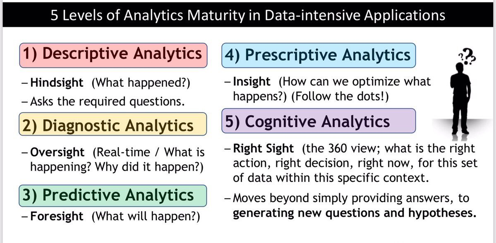

Artificial intelligence (AI) is intelligence demonstrated by machines, unlike the natural intelligence displayed by humans and animals, which involves consciousness and emotionality. The distinction between the former and the latter categories is often revealed by the acronym chosen. 'Strong' AI is usually labelled as artificial general intelligence (AGI) while attempts to emulate 'natural' intelligence have been called artificial biological intelligence (ABI). Leading AI textbooks define the field as the study of "intelligent agents": any device that perceives its environment and takes actions that maximize its chance of achieving its goals.[3] Colloquially, the term "artificial intelligence" is often used to describe machines that mimic "cognitive" functions that humans associate with the human mind, such as "learning" and "problem solving".[4]
As machines become increasingly capable, tasks considered to require "intelligence" are often removed from the definition of AI, a phenomenon known as the AI effect.[5] A quip in Tesler's Theorem says "AI is whatever hasn't been done yet."[6] For instance, optical character recognition is frequently excluded from things considered to be AI,[7] having become a routine technology. Modern machine capabilities generally classified as AI include successfully understanding human speech,[9] competing at the highest level in strategic game systems (such as chess and Go),[10] and also imperfect-information games like poker,[11] self-driving cars, intelligent routing in content delivery networks, and military simulations.[12]
Artificial intelligence was founded as an academic discipline in 1955, and in the years since has experienced several waves of optimism,[13][14] followed by disappointment and the loss of funding (known as an "AI winter"),[15][16] followed by new approaches, success and renewed funding. After AlphaGo defeated a professional Go player in 2015, artificial intelligence once again attracted widespread global attention. For most of its history, AI research has been divided into sub-fields that often fail to communicate with each other.[19] These sub-fields are based on technical considerations, such as particular goals (e.g. "robotics" or "machine learning"),[20] the use of particular tools ("logic" or artificial neural networks), or deep philosophical differences.[23][24][25] Sub-fields have also been based on social factors (particular institutions or the work of particular researchers).[19
The traditional problems (or goals) of AI research include reasoning, knowledge representation, planning, learning, natural language processing, perception and the ability to move and manipulate objects.[20] AGI is among the field's long-term goals.[26] Approaches include statistical methods, computational intelligence, and traditional symbolic AI. Many tools are used in AI, including versions of search and mathematical optimization, artificial neural networks, and methods based on statistics, probability and economics. The AI field draws upon computer science, information engineering, mathematics, psychology, linguistics, philosophy, and many other fields.
The field was founded on the assumption that human intelligence "can be so precisely described that a machine can be made to simulate it".[27] This raises philosophical arguments about the mind and the ethics of creating artificial beings endowed with human-like intelligence. These issues have been explored by myth, fiction and philosophy since antiquity.[32] Some people also consider AI to be a danger to humanity if it progresses unabated.[33][34] Others believe that AI, unlike previous technological revolutions, will create a risk of mass unemployment.[35] In the twenty-first century, AI techniques have experienced a resurgence following concurrent advances in computer power, large amounts of data, and theoretical understanding; and AI techniques have become an essential part of the technology industry, helping to solve many challenging problems in computer science, software engineering and operations research.
Machine learning (ML), a fundamental concept of AI research since the field's inception,[d] is the study of computer algorithms that improve automatically through experience.

.jpg)

| AI type | Description | Image |
|---|---|---|
| AI Analytic | Analytics refers to the process of identifying, interpreting and communicating meaningful patterns of data. Business analytics refers to applying this process to answer business questions, make predictions, discover new relationships and ultimately make better decisions. In essence, analytics is the process of taking raw data and applying some form of analytical technique in order to find meaningful patterns in the data. |
 |
| AI Functional | Functional AI is very similar to analytic AI – it also scans huge amounts of data and searches for patterns and dependencies in it. However, instead of giving recommendations, functional AI takes actions. For instance, being the part of the IoT cloud, it can spot a machine-breakdown pattern in the sensor data received from a certain machine, and trigger a command to turn this machine off. Another example: robots that Amazon uses to bring the shelves with the goods to the pickers, thus speeding up the picking process. |
|
| Interactive AI | This type of AI allows businesses to automate communication without compromising on interactivity. To envisage this type of AI, think of chatbots and smart personal assistants whose abilities can vary from answering pre-built questions to understanding the conversation context. Interactive AI can serve another purpose – improving a company’s internal processes. For example, one of our projects was dedicated to creating a chatbot to facilitate the corporate process of vacation booking. |
|
| Text AI | Businesses that use text AI can enjoy text recognition, speech-to-text conversion, machine translation, and content generation capabilities. Even if a company is not Google or Amazon, or any other giant company that provides text AI as a service, it can still take advantage of this AI type. For example, the company can use text AI to power an internal corporate knowledge base. Contrary to a traditional knowledge base that rests upon a search by keywords, an AI-powered one can find the document containing the most relevant answer even if the document doesn’t have full keywords. This is possible thanks to semantic search and natural language processing, which allow AI to build semantic maps and recognize synonyms to understand the context of the user’s question. |
|
| Visual AI | With visual AI, businesses can identify, recognize, classify and sort objects or convert images and videos into insights. A computer system that helps an insurer to estimate damage based on damaged car photos or a machine that grades apples based on their color and size are the examples of visual AI. This type of AI covers computer vision or augmented reality fields. |